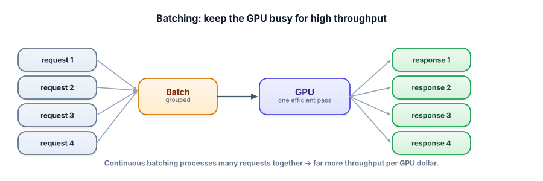

Batching & throughput
A GPU running one request at a time is mostly idle. Batching processes many requests together to keep it busy, dramatically increasing how many users one machine can serve. It’s the key to serving LLMs affordably at scale — and the source of the latency-vs-throughput trade-off you’ll constantly balance.
Why GPUs love batches
GPUs are massively parallel — they’re built to do many calculations at once. Serving a single request uses only a sliver of that capacity, so the GPU sits largely idle while you pay for the whole thing. Batching groups multiple requests and runs them together in one pass, using the GPU’s parallelism fully. The result: far more throughput (requests served per second per GPU) and thus far lower cost per request — the economics that make self-hosted LLM serving viable.

Batching processes multiple requests simultaneously on the GPU. Throughput is how many requests (or tokens) you can serve per second; latency is how long one request takes. These trade off: waiting to fill a batch can add a little latency to each request but greatly raises throughput. Continuous batching (used by serving engines like vLLM) is the modern approach — it dynamically adds and removes requests from the running batch as they arrive and finish, keeping the GPU maximally busy without making requests wait for a fixed batch to fill.
A school bus can carry 40 kids, but imagine the driver taking one kid at a time. The bus is always moving and the road is busy, yet almost nobody gets to school. Batching fills the seats, and continuous batching is a bus that lets kids hop on and off at every stop instead of waiting until all 40 seats are full. Where it breaks: a bus has a fixed number of seats, while a GPU's limit is memory for each passenger's notes (the KV cache), which grows as their conversation gets longer.
You rarely implement batching by hand. If you call a hosted API, the provider batches for you. If you self-host, you use a serving engine — vLLM, TGI, or similar (and even Ollama for local) — that does continuous batching automatically. Your job is to understand the trade-off so you configure and reason about it well, not to write the batching loop.
Throughput against latency
Increase the batch size. Throughput climbs, the GPU stops idling — and every individual user waits longer. There is no setting that wins both.
Assumptions (ours, illustrative): 50,000 requests a day, 300 output tokens each, 15% of daily traffic in the peak hour. Throughput figures are round illustrative numbers for a 7B model on one 24 GB GPU; benchmark your own engine and hardware.
- Peak demand. 50,000 x 15% = 7,500 requests in the peak hour = 2.08 requests/s. Output needed: 2.08 x 300 = 625 tokens/s.
- One request at a time. Say a single stream decodes at 40 tokens/s. You would need 625 / 40 = 15.6, so 16 GPUs, each mostly idle because decode at batch size 1 is limited by memory bandwidth, not compute.
- Continuous batching. Say the engine sustains 800 tokens/s aggregate at 32 concurrent sequences. 625 / 800 = 78% of one GPU; plan 2 for headroom and failover. That is an 8x cut in hardware.
- What each user feels. 800 / 32 = 25 tokens/s per stream, slower than 40 but still faster than anyone reads. The trade is visible: throughput up 20x, per-user speed down 38%.
- Memory check. 32 sequences x 4,000 tokens x 56 KB (Qwen2.5-7B KV per token, from Lesson 8.5) = 7.3 GB of KV, plus 4.7 GB of Q4 weights, fits in 24 GB. Paged KV allocation, as in vLLM's PagedAttention, is what lets the engine pack this many sequences without wasting memory on fragmentation.
- The hosted equivalent. On an API you do not batch the GPU, but you can batch the bill: Anthropic's Message Batches API is 50% off, takes up to 100,000 requests or 256 MB per batch, and finishes within 24 hours, with most batches done in under an hour (Anthropic batch docs). Nightly evals and backfills belong there.
- A GPU serving one request is mostly idle; batching runs many requests together to use its parallelism.
- Batching raises throughput (requests/sec per GPU) → lower cost per request at scale.
- Throughput vs latency is a trade-off: bigger batches serve more but can add per-request latency.
- Continuous batching (vLLM, TGI) adds/removes requests dynamically for the best of both.
- The serving engine handles it — you configure and reason about it, you don’t hand-code it.
You self-host a model and costs are high because each GPU serves few users. Throughput is low even though latency per request is fine. What most directly helps?
What does increasing batch size trade off?
You must classify 2 million support tickets by tomorrow morning using a hosted Claude model. Nobody waits on individual results. What is the most cost-effective choice?
1. In your own words, why does running one request at a time waste a GPU?
2. Explain the latency/throughput trade-off, and when you’d favor each.
3. If you only ever call a hosted API (no self-hosting), how much do you need to worry about batching?
▸ Show solutions & reasoning
1. A GPU has thousands of parallel compute units, but a single request only occupies a fraction of them — the rest sit idle while you pay for the whole chip. It’s like running one item through a factory built for hundreds at once. Batching fills the unused capacity with other requests, so the same hardware does much more work for the same cost.
2. Bigger batches serve more requests per second (high throughput) but an individual request may wait a bit to be batched and shares the GPU, slightly raising its latency; smaller batches give each request lower latency but waste capacity (low throughput). Favor throughput when you’re serving lots of users and cost-per-request dominates (a busy product); favor latency when individual responsiveness is paramount and volume is low (a premium, low-traffic experience). Continuous batching largely lets you have both.
3. Much less — the provider handles batching and GPU utilization for you, baked into the per-token price. You don’t configure it. Your serving levers become routing, caching, token budgeting, and model choice. Batching becomes your direct concern only when you self-host, where keeping GPUs busy is central to your cost. (Still worth understanding, since it explains the economics behind the prices you pay.)
When you self-host, throughput engineering centers on a serving engine (vLLM is the popular open-source choice) that does several things in concert: continuous batching (dynamically packing requests so the GPU never idles waiting for a batch to fill or for the slowest request to finish), efficient KV-cache management (the model caches the keys/values of tokens it has already processed so it doesn’t recompute them each decode step — managing this memory well, as vLLM’s “paged attention” does, is what lets many requests share a GPU), and smart scheduling. You mostly configure rather than build this, but understanding it explains your knobs: batch size, max concurrent sequences, and how much GPU memory goes to the KV cache vs. the model.
Step back and the whole track forms a coherent serving strategy with two audiences. If you call hosted APIs, the provider has already done quantization and batching; your job is to call less and call cheaper — cache (skip calls), route (right-size calls), budget tokens (lean calls), and stream (better UX).
If you self-host, you additionally own the hardware efficiency — quantize to fit cheap GPUs and batch to keep them full — which is what makes self-hosting’s “no per-token fee” economics actually pay off. In both cases the meta-skill is the same as Track 6 preached: measure cost and latency as first-class metrics, find the real bottleneck, and apply the lever that targets it.
Throughput is just the self-hosting corner of that discipline — and continuous batching is the single biggest reason a self-hosted model can be cost-competitive at scale.
labs/01_generate_and_sample.pyFree and offline once set up: Ollama with qwen2.5:7b, plus the packages in labs/README.md. From the course folder:
python labs/01_generate_and_sample.pyWhat to look for: The lab sends one request at a time, so it shows single-stream tokens/sec, the 'one kid on the bus' number. To see batching, restart Ollama with OLLAMA_NUM_PARALLEL=4 (documented in the Ollama FAQ; RAM grows with parallel x context length) and fire four lab calls at once from four terminals. Compare per-call tokens/sec with total tokens per second across all four. On a laptop CPU the gain is small; on a GPU it is large.
Small samples: these labs use 5 to 20 cases so they run in minutes on a laptop. Where they report a rate, they print n and a 95% Wilson interval. Read them as a demonstration of the mechanism, not as a measured rate for your system; for that you need hundreds of cases and several seeds.
▸ Recorded output (our run, 2026-11-03, qwen2.5:7b on a laptop GPU)
2) Same prompt, temperature 1.0, three different seeds
seed=1: Bengaluru in July typically experiences warm to hot temperatures with occasional thunderstorms.
seed=2: Bengaluru in July typically experiences hot and humid weather with occasional thunderstorms.
seed=3: Bengaluru in July typically experiences hot and dry weather with temperatures often soaring above 30°C.
distinct outputs at T=1.0: 3 (sampling -> usually 2-3)
3) Same seed twice at T=1.0 -> reproducible on the same machine
identical: True
4) Tokens are what you pay for: prompt vs output token counts
short prompt: prompt_tokens= 36 output_tokens= 2 prefill_s= 0.52 answer='Paris'
long prompt : prompt_tokens= 639 output_tokens= 2 prefill_s= 0.22 answer='Paris'
Look: the long prompt costs many more input tokens and more prefill time for the same answer.
5) Streaming: time-to-first-token (TTFT) vs total time
TTFT=0.36s total=2.54s chunks=16 decode_tokens_per_s=7.3
Look: streaming does not make generation faster; it shows the first words sooner.Your numbers will differ a little run to run. Full log: labs/outputs. Source: labs/01_generate_and_sample.py.
Warm-up. A nightly eval run is 40,000 requests averaging 3,000 input and 400 output tokens on claude-sonnet-5-5 ($2 / $10). What does it cost on the normal API and through the Batch API?
▸ Solution
Per request: 3,000 x 2/M + 400 x 10/M = $0.006 + $0.004 = $0.010. Normal: 40,000 x $0.010 = $400. Batch at 50% off: $200 a night, about $6,000 a month saved for one config change.
Transfer. Your vLLM server shows high throughput but users complain that responses sometimes stall for a few seconds mid-answer at peak. What is happening and which knobs do you look at?
▸ Solution
At peak the engine admits so many sequences that KV memory runs out, and it must pause or preempt some sequences (swap or recompute their KV) to make room; those users see a stall. Long prompts arriving and being prefilled can also delay decode steps for everyone. Knobs: cap max concurrent sequences, limit max model length, reserve a larger share of GPU memory for KV, enable chunked prefill if the engine supports it, and add replicas. Then watch p95 time-per-output-token, not just aggregate throughput.
Stretch. Using Little's law, how many concurrent sequences must your engine hold at 5 requests/s if each request spends 0.5 s in prefill and generates 300 tokens at 25 tokens/s per stream? Does a 32-sequence engine cope?
▸ Solution
Time in system per request = 0.5 + 300 / 25 = 12.5 s. Concurrency = 5 x 12.5 = 62.5 sequences. A 32-sequence engine cannot hold that: requests queue, TTFT climbs, and the queue grows without limit because arrivals exceed service. You need about 2 engines of 32 (and more with headroom), or shorter outputs: at 150 tokens, time in system is 6.5 s and concurrency 32.5, which just about fits one engine. Output length is a capacity lever as well as a cost lever.
Junior Why does batching increase throughput on a GPU?
▸ Model answer
During decode, each step must read all the model's weights from GPU memory to produce one token. With one request, that big read produces one token, so the GPU's compute units mostly wait on memory. With 32 requests in a batch, the same weight read produces 32 tokens, one for each sequence. So tokens per second across all users rises a lot, and cost per request falls. The catch is that each user's own speed can drop a bit and memory for each sequence's KV cache limits how big the batch can get.
Mid What is continuous batching and how is it different from static batching?
▸ Model answer
Static batching collects N requests, runs them together until the longest one finishes, then starts the next batch. Short requests sit idle waiting for long ones, and new requests wait for the batch to drain. Continuous batching schedules at the level of each decode step: when a sequence finishes, its slot is filled immediately by a waiting request. GPU utilisation stays high and queueing delay drops. Engines like vLLM combine it with paged KV-cache management so many variable-length sequences share memory without fragmentation.
Senior How do you decide between a hosted API and self-hosting an open model for a high-volume workload?
▸ Model answer
I compare cost per 1,000 requests at our real traffic shape. Hosted: list price, minus caching and batch discounts. Self-hosted: GPU cost divided by measured throughput at our concurrency and latency target, plus idle capacity at off-peak, redundancy and engineering time to run it. Then I add non-cost factors: data residency and privacy, the quality gap on our eval set, need for fine-tuning, and the provider's rate limits. Self-hosting tends to win at sustained high volume with a model we can tune; hosted wins for spiky traffic, frontier quality and small teams.
We’ve optimized the calls and the hardware. The last lever is the most universal: spend fewer tokens per call, on every call, forever. Next: budgeting tokens.